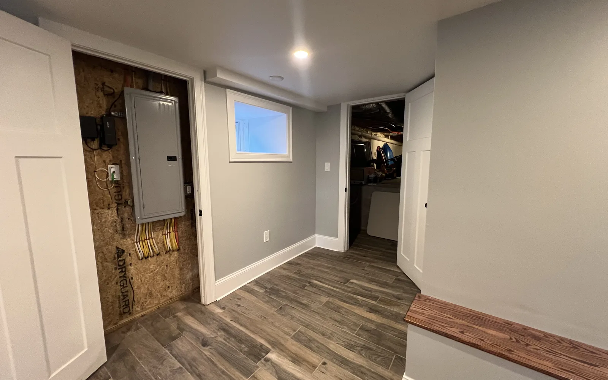

Serving Middlesex County, Massachusetts
General contractor, Middlesex County, MA: remodeling, additions, basements and decks
DeFaria Construction is a general contractor in Middlesex County, MA, serving towns from Winchester, Lexington and Weston to Westford, Tewksbury and Pepperell with owner-led kitchens, bathrooms, basements, additions, decks and commercial work.
Our work
A real DeFaria bathroom remodel
Watch one of our bathroom projects, from the first step to the final detail.
Get a Free Estimate
General contractor, Middlesex County
What a general contractor in Middlesex County, MA takes off your plate
DeFaria Construction works as the general contractor on the project, which means one company holds the contract, the schedule and the responsibility from the first walkthrough to the final punch list. You are not coordinating a carpenter, a plumber, an electrician and a tile setter on your own, and you are not the one calling the building department when an inspection needs to be booked.
On a typical Middlesex County remodel that covers the scope and the written estimate, the building permit and the trade permits, demolition and protection of the rest of the house, framing and carpentry, coordination of licensed electricians and plumbers, insulation, drywall, tile, trim, paint and the final cleanup. Luiz DeFaria is directly involved in the projects, so the person who walked the house with you is the same person who answers when a decision comes up mid-job.
The same team handles kitchens, bathrooms, basements, additions, built-ins, interior painting, decks and porches and light commercial work, so a project that touches more than one room does not need more than one contractor.
- One contract, one schedule and one point of contact
- Permits and inspections handled for you
- Licensed trades coordinated on site
- Daily cleanup and a protected work area
Where we work
Middlesex County towns we serve, with a page for each one
DeFaria Construction is based in Lynn and works across Middlesex County, from the inner suburbs like Winchester, Woburn and Arlington out to the rural towns along the New Hampshire line. Each town below has its own page with local details, the town building department and the questions homeowners there usually ask.
Winchester, MA
Late-1800s Victorians and stately colonials on the West Side, early-1900s homes near the center and the Flats. Pages for Winchester: Winchester kitchen remodeling, Winchester bathroom remodeling, Winchester home additions, Winchester home remodeling, Winchester basement finishing, Winchester built-ins and finish carpentry, Winchester interior painting, Winchester decks and porches, Winchester commercial remodeling.
Lexington, MA
Historic colonials near Lexington Center, mid-century modern neighborhoods such as Five Fields, and many Capes and split-levels. Pages for Lexington: Lexington kitchen remodeling, Lexington bathroom remodeling, Lexington built-ins and finish carpentry, Lexington interior painting.
Concord, MA
Colonial and Federal-era homes near the town center and a long tradition of careful historic review. Pages for Concord: Concord kitchen remodeling, Concord bathroom remodeling, Concord built-ins and finish carpentry, Concord interior painting.
Weston, MA
First Period and colonial homes, Queen Anne Victorians and custom homes on large wooded lots. Pages for Weston: Weston kitchen remodeling, Weston bathroom remodeling, Weston home additions, Weston home remodeling, Weston basement finishing, Weston built-ins and finish carpentry, Weston interior painting, Weston decks and porches, Weston commercial remodeling.
Lincoln, MA
Farmhouses, mid-century modern homes and conservation land that shapes how a site can be used. Pages for Lincoln: Lincoln kitchen remodeling, Lincoln bathroom remodeling, Lincoln home additions, Lincoln home remodeling, Lincoln decks and porches, Lincoln commercial remodeling.
Carlisle, MA
Historic farmhouses and contemporary homes on two-acre wooded parcels with private wells and septic. Pages for Carlisle: Carlisle kitchen remodeling, Carlisle bathroom remodeling, Carlisle home additions, Carlisle home remodeling, Carlisle basement finishing, Carlisle decks and porches, Carlisle commercial remodeling.
Bedford, MA
Postwar Capes, ranches and colonials plus older homes along Great Road and near Bedford Center. Pages for Bedford: Bedford kitchen remodeling, Bedford bathroom remodeling.
Burlington, MA
Mid-century ranches, Capes and colonials built during the town growth of the 1950s and 1960s. Pages for Burlington: Burlington kitchen remodeling, Burlington bathroom remodeling, Burlington built-ins and finish carpentry, Burlington interior painting.
Arlington, MA
Two-family homes, bungalows and colonials on tight lots close to Massachusetts Avenue. Pages for Arlington: Arlington built-ins and finish carpentry, Arlington interior painting.
Acton, MA
Colonials and newer subdivisions around the villages of South Acton, West Acton and Acton Center. Pages for Acton: Acton kitchen remodeling, Acton bathroom remodeling.
Maynard, MA
Late-1800s and early-1900s mill-worker homes near the walkable downtown, plus newer subdivisions on the outskirts. Pages for Maynard: Maynard kitchen remodeling, Maynard bathroom remodeling, Maynard home additions, Maynard home remodeling, Maynard decks and porches, Maynard commercial remodeling.
Hudson, MA
Mill-era homes near downtown and the Assabet River, with newer neighborhoods farther out. Pages for Hudson: Hudson kitchen remodeling, Hudson bathroom remodeling.
Westford, MA
Village and mill-worker homes in Graniteville and Forge Village next to mid-century colonials and newer subdivisions. Pages for Westford: Westford kitchen remodeling, Westford bathroom remodeling, Westford home additions, Westford home remodeling, Westford decks and porches, Westford commercial remodeling.
Chelmsford, MA
Capes, ranches and colonials across Chelmsford Center, North Chelmsford and the town villages. Pages for Chelmsford: Chelmsford kitchen remodeling, Chelmsford bathroom remodeling, Chelmsford built-ins and finish carpentry, Chelmsford interior painting.
Littleton, MA
Colonials and farmhouses near the common and newer homes close to Route 2 and I-495. Pages for Littleton: Littleton kitchen remodeling, Littleton bathroom remodeling, Littleton home additions, Littleton home remodeling, Littleton decks and porches, Littleton commercial remodeling.
Tewksbury, MA
Colonial-era and farm homes near the center with mid-century Capes, ranches and newer colonial subdivisions. Pages for Tewksbury: Tewksbury kitchen remodeling, Tewksbury bathroom remodeling, Tewksbury home additions, Tewksbury home remodeling, Tewksbury basement finishing, Tewksbury decks and porches, Tewksbury commercial remodeling.
Wilmington, MA
Mid-century Capes and ranches, raised ranches and newer colonials in quiet neighborhoods. Pages for Wilmington: Wilmington kitchen remodeling, Wilmington bathroom remodeling, Wilmington home additions, Wilmington home remodeling, Wilmington basement finishing, Wilmington interior painting, Wilmington decks and porches, Wilmington commercial remodeling.
North Reading, MA
Capes, colonials and split-levels along Route 28 and Route 62. Pages for North Reading: North Reading kitchen remodeling, North Reading bathroom remodeling, North Reading home additions, North Reading home remodeling, North Reading decks and porches, North Reading commercial remodeling.
Woburn, MA
A former industrial city with older homes near the center and dense neighborhoods around Horn Pond. Pages for Woburn: Woburn home additions, Woburn home remodeling, Woburn decks and porches, Woburn commercial remodeling.
Wakefield, MA
Victorians and colonials around Lake Quannapowitt and Wakefield Center. Pages for Wakefield: Wakefield home additions, Wakefield home remodeling, Wakefield decks and porches, Wakefield commercial remodeling.
Dracut, MA
Ranches, colonials and newer subdivisions north of the Merrimack River. Pages for Dracut: Dracut kitchen remodeling, Dracut bathroom remodeling.
Tyngsborough, MA
Rural lots on both sides of the Merrimack River, many with private wells and septic. Pages for Tyngsborough: Tyngsborough kitchen remodeling, Tyngsborough bathroom remodeling, Tyngsborough home additions, Tyngsborough home remodeling, Tyngsborough decks and porches, Tyngsborough commercial remodeling.
Dunstable, MA
One of the most rural towns in the county, with farmhouses and homes on large lots. Pages for Dunstable: Dunstable kitchen remodeling, Dunstable bathroom remodeling.
Groton, MA
Historic homes along Main Street and rural lots in the outer parts of town. Pages for Groton: Groton kitchen remodeling, Groton bathroom remodeling.
Pepperell, MA
Rural and village homes along the Nashua River, many on wells and septic. Pages for Pepperell: Pepperell kitchen remodeling, Pepperell bathroom remodeling, Pepperell home additions, Pepperell home remodeling, Pepperell decks and porches, Pepperell commercial remodeling.
Townsend, MA
Village homes in Townsend Center and Harbor and rural homes on larger lots. Pages for Townsend: Townsend kitchen remodeling, Townsend bathroom remodeling, Townsend home additions, Townsend home remodeling, Townsend decks and porches, Townsend commercial remodeling.
Ayer, MA
Compact downtown homes and newer neighborhoods near the former Fort Devens. Pages for Ayer: Ayer kitchen remodeling, Ayer bathroom remodeling.
Housing stock
How Middlesex County homes change the plan
The age and style of the house decide more about a remodel than the town name does, and Middlesex County has almost every type. In Weston and Concord we see First Period and colonial houses where the framing is hand-hewn, floors are out of level and nothing is a standard size. Winchester has large late-1800s Victorians with plaster walls, balloon framing and old knob-and-tube wiring that has to be found and replaced before new work closes the walls.
Lexington has mid-century modern neighborhoods such as Five Fields, with low rooflines, flat or shallow roofs and large glass walls. Those houses reward careful design, because an addition or a new kitchen layout can easily break the lines that make them special. Maynard, Hudson and the Westford villages of Graniteville and Forge Village have mill-era homes on narrow lots, where access for materials and a dumpster is part of the plan.
Burlington, Bedford, Wilmington, Tewksbury, Chelmsford and North Reading are full of postwar Capes, ranches, split-levels and colonials. These homes usually have solid bones and simple framing, which makes them good candidates for opening a kitchen wall, finishing a basement or adding a second floor or a rear addition.
- First Period and colonial homes: out-of-level floors and hand-hewn framing
- Victorians: plaster, balloon framing and older wiring
- Mid-century modern: low rooflines and glass walls to protect
- Postwar Capes and ranches: simple framing that is easy to expand
Permits and codes
Permits, codes and approvals across Middlesex County towns
Every Middlesex County town runs its own building department, and permits are issued under the Massachusetts State Building Code (780 CMR). Most remodels that move walls, plumbing, wiring or structure need a building permit plus separate electrical and plumbing permits pulled by the licensed trades. DeFaria prepares the scope, files the permit and books the inspections at each stage.
Energy rules are not the same in every town. Many Middlesex County towns have adopted the Massachusetts Stretch Energy Code, and some have opted into the newer Specialized Code, which changes the insulation, air sealing and heating requirements for additions and major renovations. We confirm the current rule with the town before the design is final, so the estimate already reflects it.
Historic homes can add another review. Towns such as Lexington, Concord, Weston and Lincoln have local historic district commissions, and exterior changes visible from the street inside a district usually need their approval before the building permit. Projects on the water or near wetlands also go to the local Conservation Commission.
- Building permit under 780 CMR, plus electrical and plumbing permits
- Stretch or Specialized energy code checked town by town
- Historic district review for exterior changes where it applies
- Conservation Commission review near wetlands and ponds
Wells and septic
Projects on a private well and septic system
In Carlisle, Dunstable, Pepperell, Townsend, Groton, Tyngsborough and parts of Lincoln and Westford, many homes rely on a private well and a septic system instead of town water and sewer. That matters most when a project adds a bedroom. Under the state septic rules (Title 5), the system is sized by the number of bedrooms, so an addition, a finished basement with a bedroom or a new in-law suite usually goes to the local Board of Health first.
We check the septic design, the reserve area and the well location at the first visit. If an upgrade is needed, it is listed separately in the estimate, so you can see what the site work costs and what the new rooms cost before deciding.
Kitchens and bathrooms
Kitchen and bathroom remodeling in Middlesex County
Kitchens and bathrooms are most of the work we do in the county. In older homes the job starts with what is behind the walls: undersized wiring, old galvanized supply lines, missing vent fans and floor framing that has been notched by plumbers over the decades. We open, fix and inspect before cabinets and tile go in, so the new room does not hide an old problem.
For kitchens, that usually means a layout that fixes the work triangle, new cabinets, counters, lighting and dedicated circuits for modern appliances. For bathrooms, it means a waterproofed shower, a vent fan ducted outside, safe and level floors and fixtures that suit how long you plan to stay in the house.
- Kitchen remodeling with layout, cabinets, counters and lighting
- Bathroom remodeling with waterproofed showers and proper ventilation
- Walk-in showers and aging-in-place details
Additions
Home additions and in-law suites under the 2025 ADU law
When a family outgrows the house, an addition is often simpler than moving, especially in towns where good lots are scarce. DeFaria builds rear additions, second-story additions, primary suites and bump-outs, and ties the new roof, siding and heating into the existing house so the addition does not look added on.
Since February 2025, Massachusetts law allows one accessory dwelling unit of up to 900 square feet by right in single-family zones, subject to local site, health and building rules. For Middlesex County families who want space for a parent or an adult child, an attached in-law suite is now easier to approve than it was a few years ago.
- Home additions: rear, second-story and bump-outs
- Attached in-law suites under the 2025 ADU law
- Roof, siding and heating tied into the original house
More living space
Basements, built-ins and interior painting
A finished basement is often the least expensive square footage in the house, as long as the basement is dry. We check grading, gutters, cracks and the sump before anything is framed, and insulate the walls with materials that tolerate moisture below grade. Rooms used for sleeping need a code-size egress window.
Inside the main house, custom built-ins, window seats, mudroom benches and bookshelves add storage that fits older homes with odd dimensions, and interior painting finishes the job with proper prep on plaster and old trim.
- Basement finishing with moisture control first
- Built-ins and finish carpentry
- Interior painting with careful prep
Outside the house
Decks, porches and light commercial work
Decks and porches in Middlesex County have to handle freeze and thaw cycles, snow load and wet springs. We build on footings below the frost line, use proper flashing where the ledger meets the house and choose decking and railings that hold up for years. On older homes, rebuilding a front porch often means matching original columns, trim and railings.
For business owners, we handle office, retail and restaurant fit-outs, accessibility upgrades and phased work that keeps the business open. Commercial pages for each town explain the local permitting and the corridors where most commercial space sits.
- Decks and patios built on frost-depth footings
- Front porch rebuilds that match the original details
- Commercial projects scheduled around your hours
Budget
What moves the cost of a Middlesex County project
Two kitchens of the same size can have very different prices, and in Middlesex County the difference is usually in the house, not the finishes. The items that move the number most are hidden conditions in older homes, structural changes such as removing a bearing wall, the energy code that applies in your town, access for materials on tight lots, and site work like septic upgrades in the rural towns.
Every DeFaria estimate is written and itemized, so you can see where the money goes and decide what to keep, change or phase. For typical ranges, our guides on kitchen remodel cost in Massachusetts, bathroom remodel cost in Massachusetts and basement finishing cost in Massachusetts break the numbers down.
- Hidden conditions in older homes
- Structural changes and engineering
- Town energy code and historic review
- Site access and septic or well work
How it works
How a DeFaria project runs, from first call to final walkthrough
It starts with a visit to the house, where we look at the space, talk through what you want and check the things that change the plan, such as structure, wiring, plumbing, moisture and the septic or well. From there you get a written, itemized estimate and, once you approve it, a schedule.
We file the permits, order long-lead items like cabinets and windows early, protect the rest of the house and start work. Inspections happen at each stage: framing, rough electrical and plumbing, insulation and final. Before we finish, we walk the project with you and close every item on the punch list.
- Walkthrough and honest assessment of the house
- Written, itemized estimate
- Permits, ordering and a realistic schedule
- Staged inspections and a final walkthrough with you
Project photos
Examples of DeFaria work: additions, commercial interiors and decks
A few of the project types we build for Middlesex County homeowners and businesses. Each service page has more photos of finished work.



Who does the work
Owner-led by Luiz DeFaria, licensed and insured
DeFaria Construction is a licensed and insured Massachusetts contractor with an A+ rating with the Better Business Bureau and a 5.0 rating on Google. Luiz DeFaria is involved in the projects himself, from the first visit and the estimate to the decisions that come up during the work.
Several of our Google reviews come from clients who hired us more than once, for a condo gut remodel, a basement and garage upgrade or years of projects in more than one home, and they mention the same things: timelines kept and a work area left clean at the end of every day.
- Licensed and insured in Massachusetts
- A+ BBB rating
- 5.0 rating on Google
Reviews
What homeowners say about DeFaria Construction
DeFaria Construction has a 5.0 rating from 19 reviews on Google. See all reviews on Google.
Luiz has done many projects, from major renovations to minor repairs, for us in multiple homes over the last ten years. He and his company always do excellent and timely work. I would recommend him any time.
We used DeFaria Construction twice, once for a gut remodel of a condo unit and the other for a basement and garage upgrade. They are very professional, reasonably priced, do a great job, stick to their timelines and leave the work area totally clean at the end of every day. I highly recommend Luiz…
My husband and I are so grateful for the beautiful work Luis did to get our home move-in ready. We had a newborn and a tight move-in window, and Luis went above and beyond to get everything done in time. He helped us with multiple projects including building a gate, repairing walls/doors…
FAQ
Common questions about hiring a general contractor in Middlesex County
Is DeFaria Construction a general contractor in Middlesex County, MA?
Yes. DeFaria Construction works as the general contractor on remodeling, addition, basement, deck and commercial projects across Middlesex County, including Winchester, Lexington, Concord, Weston, Bedford, Burlington, Acton, Westford, Tewksbury, Wilmington and North Reading.
Do I need a permit for a remodel in a Middlesex County town?
Most remodels that move walls, plumbing, wiring or structure need a building permit from the town building department under the Massachusetts State Building Code, plus electrical and plumbing permits. DeFaria files the permits and books the inspections.
Does my town energy code change the project?
It can. Many Middlesex County towns use the Massachusetts Stretch Energy Code and some have adopted the Specialized Code, which affect insulation and heating for additions and major renovations. We confirm the rule with your town before the design is final.
Can I add an in-law suite to my house in Middlesex County?
In most single-family zones, yes. Since February 2025, Massachusetts allows one accessory dwelling unit of up to 900 square feet by right, subject to local site, health and building rules. Homes on septic usually need a Board of Health review when a bedroom is added.
Is DeFaria Construction licensed and insured?
Yes. DeFaria Construction is a licensed and insured Massachusetts contractor with an A+ BBB rating and a 5.0 rating on Google.
How do I start a project with DeFaria?
Call (781) 586-8838 or request a free estimate on this page. We visit the house, talk through the project and send a written, itemized estimate.